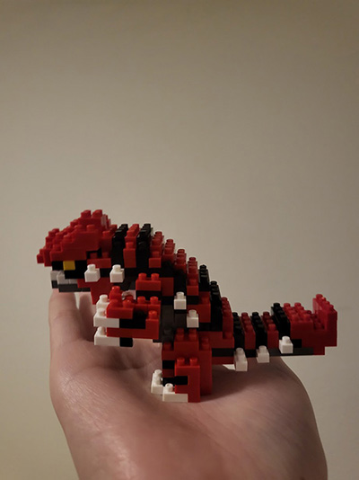

The photo I have chosen is a self-portrait I finished a few days ago. Upon first glance, I understand it is eye-catching because it makes use of fun, bold colors and line. It is actually inspired by the work of Alberto Mielgo, a renowned concept artist known for his work on projects such as Love, Death, Robots and Into/Across the Spider-Verse. Techniques used by the artist are mirrored in my work, including some of his signature brush textures and tonal choices. Although not necessarily involved in video games, Mielgo’s influence on my work is representative of an amalgamation of artists I align myself with, all of whom work in the entertainment industry. My project is focused on the evolution of my art and how it relates to my relationship with video games, and individuals such as Mielgo have become large driving forces in my journey. My overall collection is entirely made up of my art, and so it realizes my physical growth as a character designer. Technique and methodology literally reflect my sources of inspiration, either from games or other professionals, which I will describe symbolically through gaming terminology. Additionally, my content tells a story about my growth as an individual as a whole. Themes throughout my archive are representative of both positive and darker points in my life, all of which have shaped the designer I am today. I believe telling that story may help the next generation of creatives find themselves.

Tiffany Lui, 2024
Tiffany’s photo is about a Lego (or something similar) hobby. I know this because I can clearly see her hand holding a Pokémon, Groudon, that is made up of little Lego pieces. The piece is very detailed, so I can infer that Tiffany spent a lot of time creating it – it’s definitely something she invests energy into, and with good reason! Looking at this Pokémon makes me wonder if Tiffany has a larger collection; if this is one of her primary images I can assume that may be the focus of her project. As someone who is also a fan of Pokémon, I’m eager to see other cute recreations. Additionally, my own personal connection to this game, as someone who is the same age as Tiffany, is also likely mirrored in her experience with the toy. For many people of our generation, Pokémon games have been a formative experience as a primary source of entertainment for younger audiences. I can infer that Tiffany relates her models to positive childhood experiences, which may be (indirectly) the reason she collects these types of models in particular.
Studio 2 - Visual Thinking Strategies Research
What I learned & Project Inspiration
“10 Intriguing Photographs to Teach Close Reading...” reminded me to slow down in my visual analyses, to stay curious, and to experiment with hypotheses and discussion. As the author, Michael Gonchar, states, “young people often want to hurry up and make meaning via a quick skim,” when this is not necessarily best.
Throughout the article, the reader is shown a number of “What’s Going On in This Picture?” pieces, heavily discussed as interesting, thought-provoking compositions. While they serve as proof that careful visual interpretation is important to cognitive operation, they also hint at the fact that subject material must be unique enough to inspire conversation. When taking a look at Studio 2, I aspire to achieve the same level of mystery that the Times’ pictures serve its readers. After all, I want to encourage the user to investigate my narrative, rather than passively scroll or click through. In the same way that “What’s Going On in This picture” dissects individual components of photographs, I would like to use one primary image in my project and allow users to click through different parts of it.
The website Abstract Intelligence acts as a great example of interactivity and thought on the web. While it doesn’t necessarily align with the style I’m going for, it is definitely a work of art in itself. The element I most like about this example is the effect of the cursor on imagery. Fitting in with the site’s focus on advancements in technology, cursor-image interactions create a shifting, pixelated, glitch effect. Since I’m interested in a video game theme for my project, something like this could be fun (but is probably difficult to achieve).
The article “Overuse of Overlays,” by Kathryn Whitenton, encouraged me to carefully consider cognitive load and accessibility in overlays. The opening of the article delves into a case study in which Apple created an overlay so large it required a massive scroll bar and anchor tags. Without even approaching the logistics of overlays, this example made clear the importance of efficiency when considering them.
Continuing on with this point, Whitenton makes a compelling argument against overlays more than she does for them. This isn’t to say that they are bad practice, rather that there must be good reason for them or else they make content inaccessible/trickier to navigate. If content can exist without an overlay, then it is probably best we don’t add one. A few circumstances in which overlays may be necessary are made clear: confirming a serious action, etc. But as a whole, it seems overlays are easily misconstrued (and should be avoided). When considering an overlay, debugging and accessibility should be top priorities, or else they may detract from the user’s overall experience. Taking another look at Apple’s case, we may also consider sorting overlay content into its own page if it makes sense on its own.
The best practices for form design outlined in the article tie in to what I was taught in DES 112 – Principles of UI/UX. The same guidelines for other digital media – websites, apps, etc – that we were taught in that course (and in DES 117) seem to guide the creation of a good form.
Throughout the article, author Salim Ansari asserts and reasserts the concepts of cognitive load and interaction costs, the two driving forces behind conscious form design choices. Many of the tips outlined pay close attention to both of these. For instance, Ansari warns against drop-downs whenever possible, both because they hurl information at the user in one large chunk and because they lengthen interaction time unnecessarily. Other examples (label positioning, easy questions first, etc.) are explained similarly. These concepts, taught in previous courses, act as the foundation on which tasks such as form design are built. In understanding these, form design should theoretically come naturally to me.
Best Practice: Tinder’s account creation exemplifies best practices by breaking each field into its own page to reduce cognitive load. Additionally, it approaches the user in a friendly textual manner, building trust with them as they venture into the dating world. (https://tinder.com/)